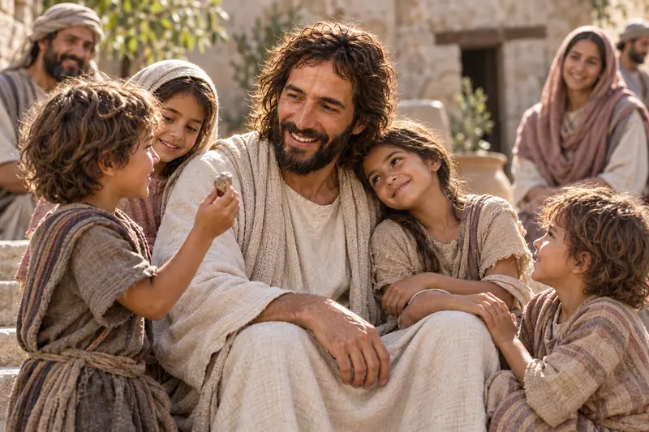
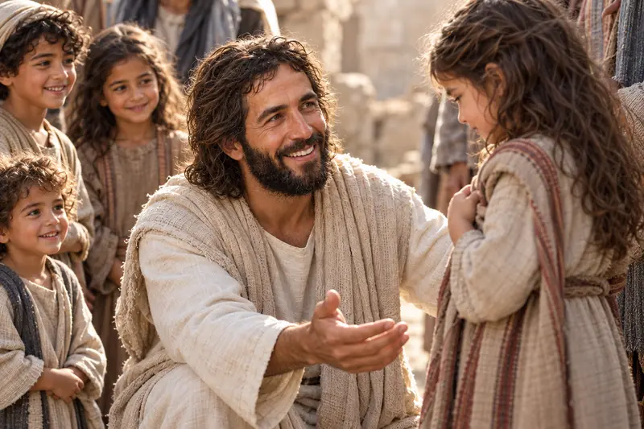
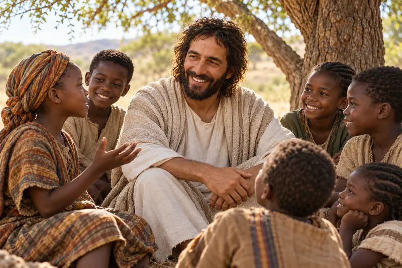
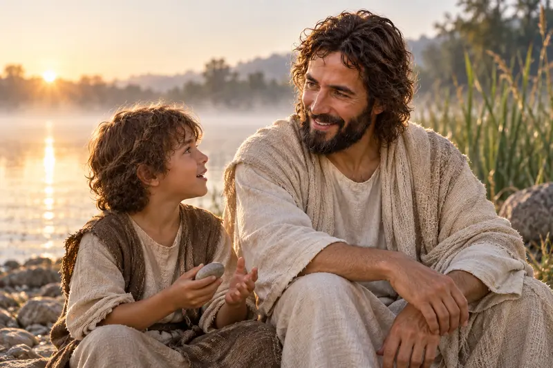

Notice each child's posture and the calm attention Jesus gives them.
Children press close to Jesus without fear. One rests against Him, another reaches toward Him, and the Savior receives their trust with complete attention.
A path through this study
Come Close Without Fear
The painting is full of touch, movement, and trust. Jesus is not speaking to a distant crowd; He is giving the children His time. The Gospel accounts make that welcome even more striking because the disciples had tried to turn them away.
Follow the movement from being rebuked at the edge to being held and blessed.
Ask what helps a child or vulnerable person feel safe, heard, and cherished.
Scripture study
He Took Them in His Arms
Read Mark 10:13-16 slowly. People bring children to Jesus so He can touch them. The disciples object, but Jesus is displeased with the barrier they create. He calls the children to Him, takes them in His arms, places His hands upon them, and blesses them. His welcome is spoken and embodied.
Jesus also teaches the adults: the kingdom of God must be received as a little child. The passage honors qualities such as trust and openness without pretending children never feel fear or pain. The adults around them carry a sacred responsibility to protect, listen, and lead with love.
A day of prayer, tears, and joy at Bountiful
In 3 Nephi 17, Jesus perceives that the people desire Him to remain. He heals their sick, prays with them, and asks that their little children be brought to Him. The chapter lingers over compassion. Read verses 21-24 and notice what the children receive and what the gathered adults are allowed to witness.
Look again
Every Child Drawn Near
These artworks carry the same welcome into different places and relationships. Open each one at full size before reading the scripture beside it.
{kind=link}

{kind=link}

{kind=link}

{kind=link}

Quiet reflection
Receive and Protect
Use these questions for prayer, a journal, or a family conversation.
What do I see in the children's faces and hands?
Look again before answering. Notice who is reaching, resting, watching, or smiling. What does Jesus do that allows closeness and trust?
How can I listen to a child more fully?
Choose one ordinary moment this week to put distractions down, listen without interrupting, and take a child's words seriously.
What does Christlike protection require?
The Savior removed a barrier and welcomed the children. Consider whether a family, congregation, school, or community practice needs more patience, safety, or attentive care from you.
Watch, read, and reflect
A companion for your study
These official Church resources offer another way to explore this subject. Read or watch at your own pace, then return to the passages above.
Church video
President Nelson Blesses Children with the Lord’s Love
Hear a witness of Jesus Christ and His love addressed directly to children.
The Church of Jesus Christ of Latter-day Saints
Church video
Are You Really There?
See heartfelt prayers answered through peace in Jesus Christ and the care of other people.
The Church of Jesus Christ of Latter-day Saints
Keep walking
Where Would You Like to Go Next?
Strengthen Belonging at Home
Continue into family love, responsibility, and the many forms faithful care can take.
When a Child Is Grieved
Find a gentle, scripture-grounded study for a sorrow that should never be rushed.
Follow the Good Shepherd
Continue with the Savior who knows His sheep and comes close to the wounded.